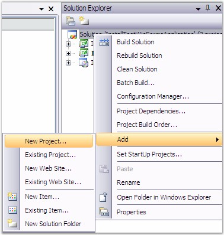
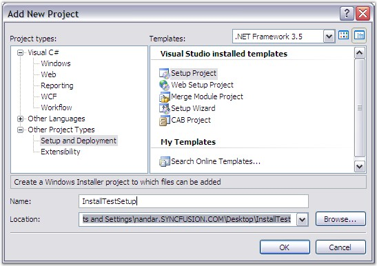
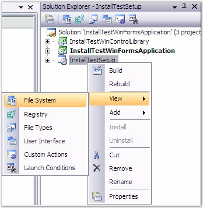
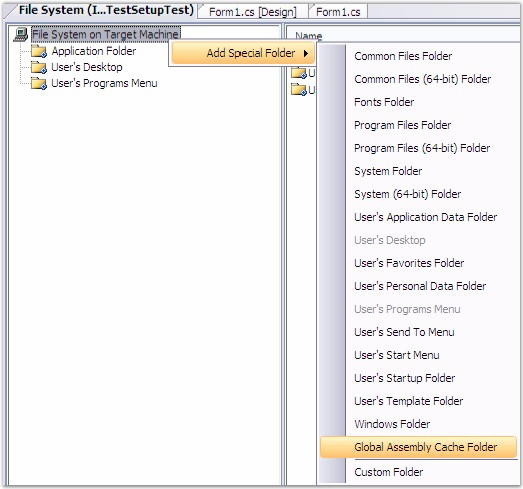
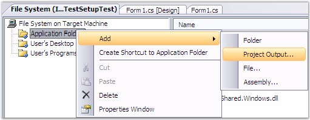
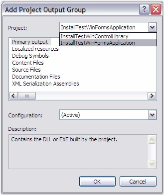
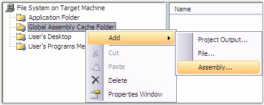
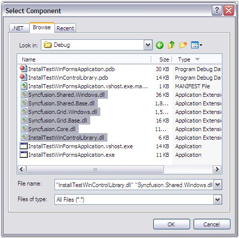
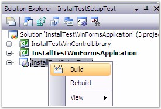
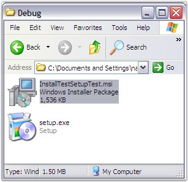

The following are the steps to create a setup package using Syncfusion assemblies – WinForms:
1. In the Solution Explorer, right-click the Solution file and then click Add -> New Project.

Figure 56: Creating a setup package using Syncfusion assemblies - WinForms
The Add New Project dialog box opens.
2. Select Setup and Deployment.

Figure 57: Add New Project
3. Specify the name and location in the corresponding field and then click Ok.
4. Right-click the setup project and then click View -> File System.

Figure 58: Solution Explorer - InstallTestSetup
5. Right-click the File System and then click Add special folder -> Global Assembly Cache folder.

Figure 59: Global Assembly Cache folder
6. Right-click the Application Folder and then click Add -> Project Output.

Figure 60: Project Output
The Add Project Output Group dialog box opens.
7. Select the projects, from which the output needs to be added to the setup. If you have an additional Windows control library, repeat the step 6 for the additional projects. Ensure that you have referenced both the projects' Syncfusion assemblies’ property CopyLocal to true.

Figure 61: Add Project Output Group
 Note: Follow the same step to add another project
output to the Application folder. If it has repeated assemblies, they will be
over-written. In this case we need to do this step two times for
InstallTestWinFormsApplication and InstallTestWinControlLibrary.
Note: Follow the same step to add another project
output to the Application folder. If it has repeated assemblies, they will be
over-written. In this case we need to do this step two times for
InstallTestWinFormsApplication and InstallTestWinControlLibrary.
8. To install the required assemblies in the GAC (C:\Windows\Assembly), in the FileSystem, right-click the GlobalAssemblyCache folder and then click Add -> Assembly.

Figure 62: Add Assemblies
9. Browse to the folder where the assemblies are located and add all required assemblies to the GAC.

Figure 63: Select Component
10. Compile your application projects in the required order.
11. In the Solution Explorer, right-click the setup project and then click Build.

Figure 64: Solution Explorer - InstallTestSetupTest
12. After compilation you will get the packed setup in the output folder as .msi package. This .msi package can be deployed to the users.

Figure 65: Debug
Windows Forms has been successfully deployed using a set up project.